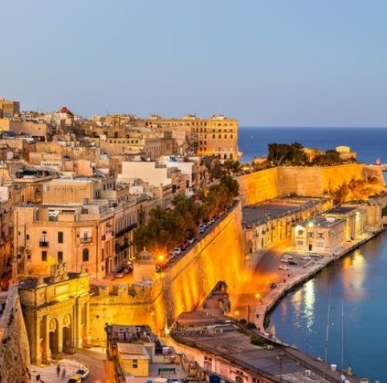
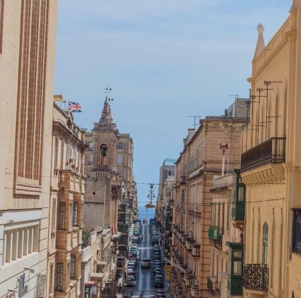
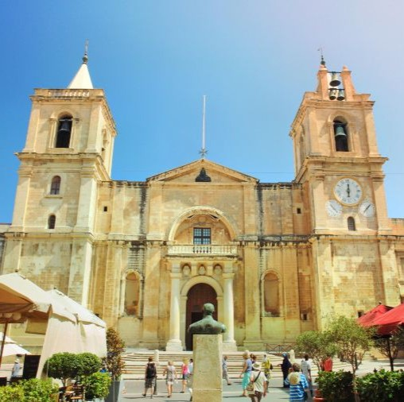
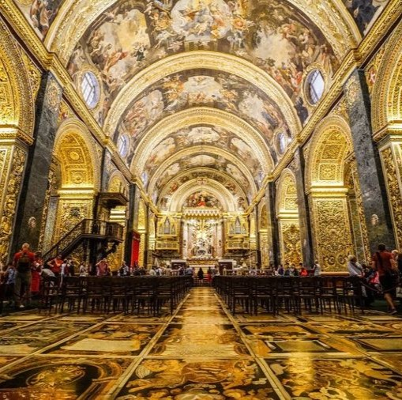
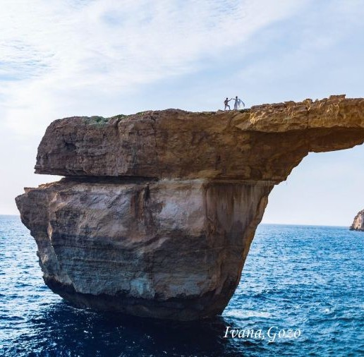
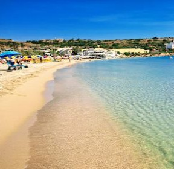
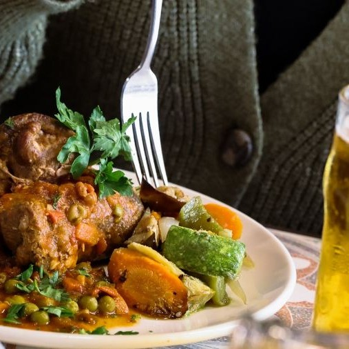
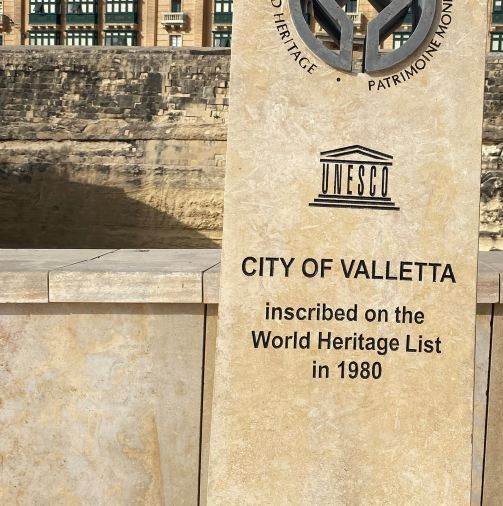

マルタ共和国の首都ヴァレッタは、地中海に浮かぶ歴史的な要塞都市です。 16世紀半ばに聖ヨハネ騎士団によって計画的に建設され、バロック建築の傑作として知られています。 街全体が堅固な城壁で囲まれており、その歴史的・文化的な価値から1980年にユネスコの世界遺産（文化遺産）に 登録されました。ハチミツ色の石造りの建物が並ぶ街並みは、歩くだけで中世ヨーロッパにタイムスリップしたような 雰囲気を味わえます。
聖ヨハネ准司教座聖堂はマルタの首都ヴァレッタにあります。外観とは対照的に、内部は豪華なバロック様式で、 壁は金箔、天井にはマッティア・プレティのフレスコ画があります。約400枚の騎士の墓石が敷き詰められた床は 「世界一美しい」と称され、カラヴァッジョの傑作も所蔵する芸術の宝庫です。




マルタ最大の砂浜ビーチ、メリーハ湾（グァディラ湾）は、遠浅で波穏やかな家族連れに最適な場所です。 美しいクリスタルクリアな海が広がり、日光浴や海水浴、多彩なウォータースポーツを楽しめます。 海岸沿いにはカフェやレストランなどの設備も充実しており、ブルーフラッグ認証も受けている人気の高いリゾート地です。
ヴァレッタでは、地中海の新鮮な魚介類や、ウサギ肉のシチュー「スタファット・タル・フェネク」、 リコッタチーズを詰めたラビオリなど、伝統的なマルタ料理を楽しめます。また、イタリアの影響が強く、 ピザやパスタも主流です。ミシュラン掲載店からカジュアルなビストロまで多様なレストランがあり、 「ホブス」と呼ばれる国民的な丸いパンも欠かせません

